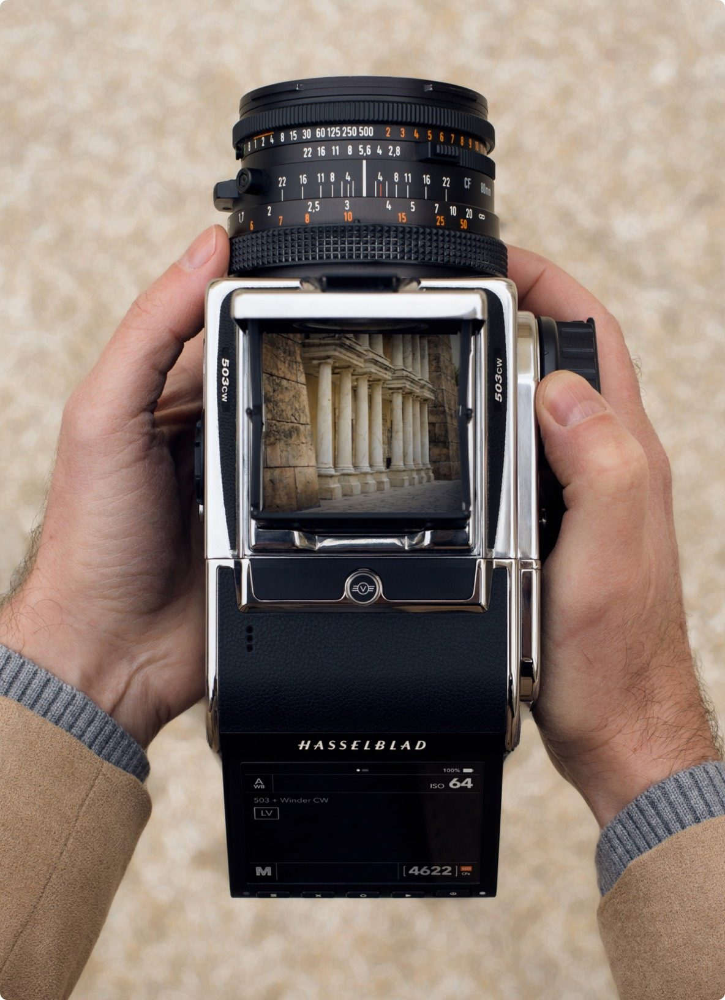
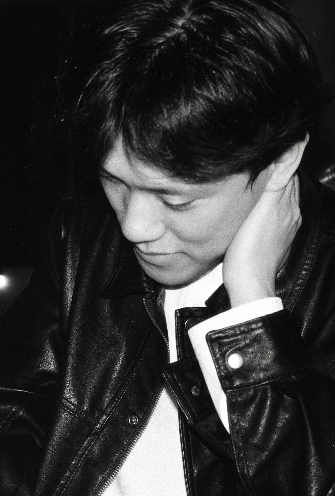
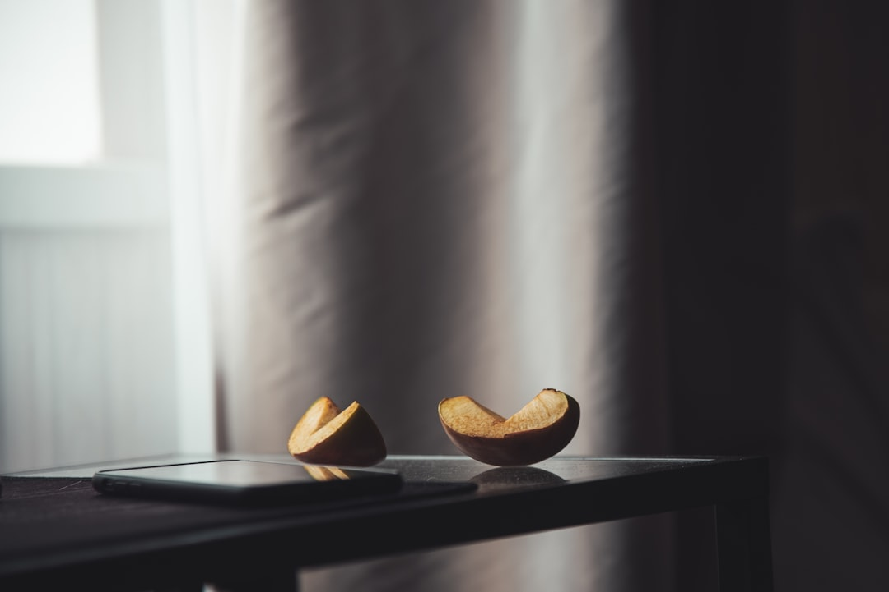

02 — The System
V System
907X & CFV 100C. Since 1957 —
1957년의 실루엣이, 2026년의 센서를 품었습니다. 907X & CFV 100C는 과거를 복원하지 않고, 이어 씁니다.
세계에서 가장 얇은 미러리스 바디 907X 위에, 1억 화소 CFV 100C 디지털 백을 얹었습니다. 허리 높이에서 내려다보는 웨이스트 레벨 촬영, 손끝으로 조율하는 아날로그의 리듬은 그대로 두고, 그 안에 오늘의 화질을 담았습니다. 1957년 이래 이어진 V 시스템의 렌즈들은 어댑터를 통해 다시 빛을 만나고, 클래식 바디는 첨단 백과 만나 시간을 가로지릅니다. 기념하지 않고, 계속 쓰는 유산입니다.
Specification
- 구성
- 907X 바디 + CFV 100C 디지털 백 · 모듈형
- 센서
- 43.8 × 32.9mm 중형 포맷 BSI CMOS · 1억 화소
- 색 재현
- Hasselblad Natural Colour Solution (HNCS) · 16bit 컬러
- 촬영
- 틸트 터치 스크린 · 웨이스트 레벨 뷰파인더 감성
- 호환
- XCD · XV 어댑터로 V 시스템 클래식 렌즈군 지원
- 계보
- 1957 500C → 오늘의 907X로 이어진 상징적 디자인


Your Frame